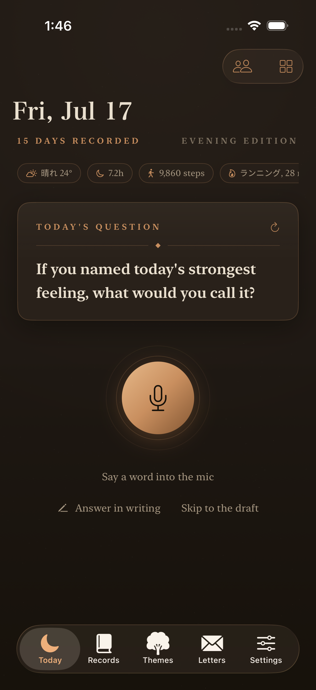
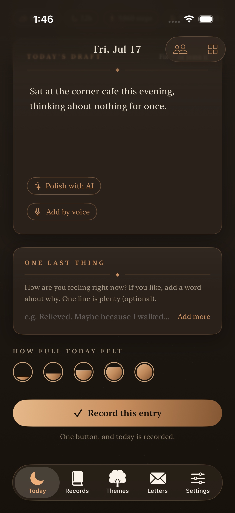
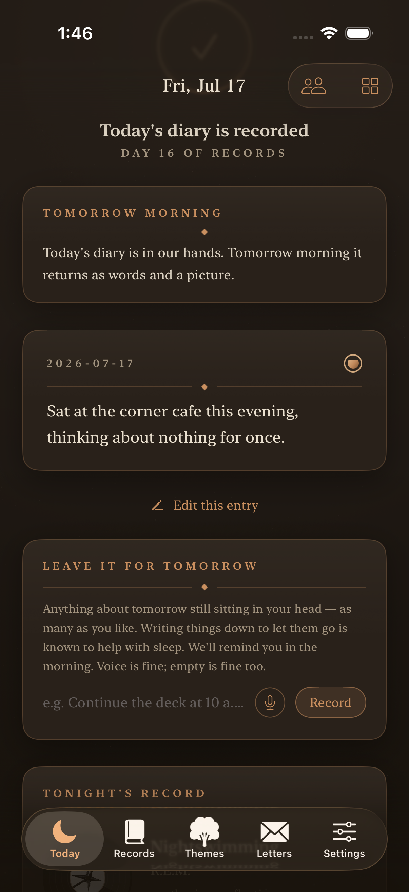
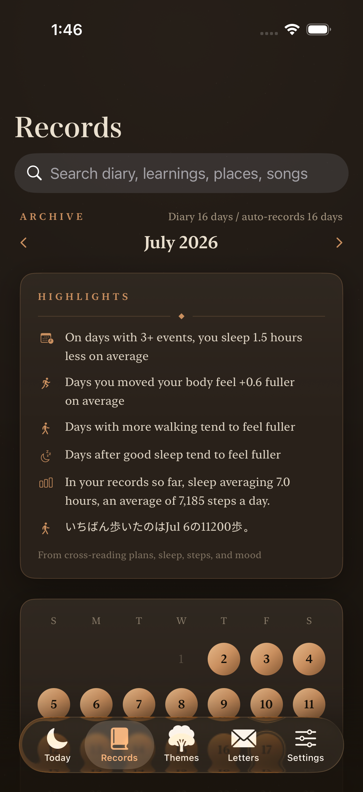
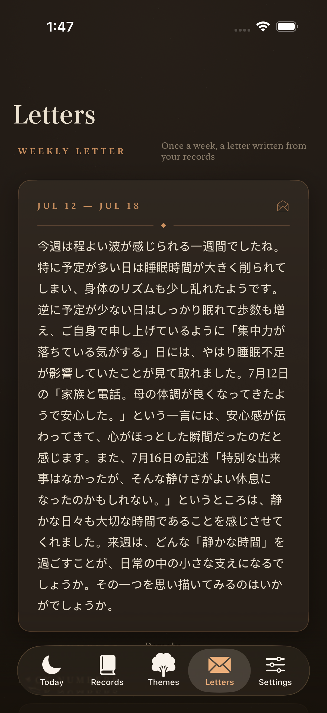
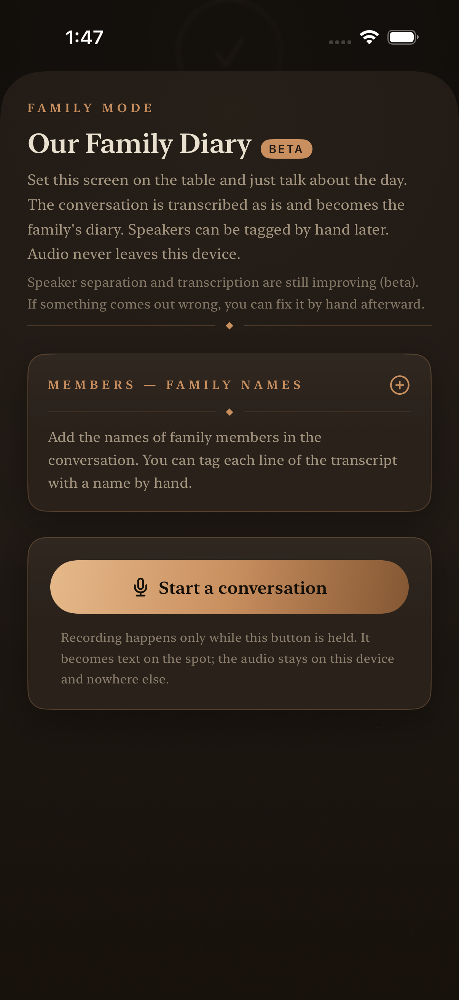

75% of people who quit journaling
didn't lack willpower.
"I don't know what to write." "I missed a few days, so it's ruined."
The real reasons are blank-page pressure and guilt — in other words, a design problem.
So Liner Notes is built to keep the record even when you don't write.
Your diary
belongs to you.
Not left on someone's server — kept in your own hands.
So you can write the truth, with no one looking over your shoulder.
No account needed
No email, no password. Nothing to sign up for — it starts working the day you open it.
On your device, yours alone
Your diary and its passive records live on your iPhone. Nothing is uploaded, and no one but you can read it.
Export to Markdown
Take the full text of your diary — automatic records included — as plain text, anytime, openable in any app. No lock-in: files you own, readable ten years from now.
Sixty seconds at night.
Just speak
One question, drawn from your day's data.
One line into the mic is plenty.

AI drafts it
Places, photos, sleep, steps, plans.
Your day, already in sentences.

Approve, and it's done
Read it, fix what you like, one tap.
Today's diary, quietly kept.

Your nights become an asset.
Sleep, steps, mood —
the whole day is kept.
Health records and diary entries stack up on one calendar, and cross-reading them reveals your own patterns.

A week becomes
a letter.
Every week, AI writes you a letter from your seven days of records. The day you walked far, the night you couldn't sleep, the moment something moved you — time to hear yourself from a small distance.

Table talk becomes
the family's diary.
Set your iPhone on the table and just talk. The conversation is transcribed as is; tag who said what afterward, and it's kept as the family's diary. Audio never leaves the device.

Starting costs
nothing.
The daily diary, AI drafts, automatic records, and export are free forever.
- Cloud AI for higher quality
- Weekly letters & full highlights
- The full-color Day's Picture · Family Mode
- All Pro features (cloud AI)
- An easy way in
Prices shown are Japan base prices — the App Store shows your local currency. Pro is the set of features that turns records into reflection; the diary itself stays free. Cancel anytime.
Questions, answered
Do I really not have to write?
Really. AI builds a draft of your day from passive data — location, photos, sleep, steps, plans. You read it, fix what you like, and approve. On days you'd rather talk, one line into the mic is plenty.
Can anyone see my diary?
Your diary is stored on your device. The developer never stores or reads your entries, and they are never used for AI training. Your words are yours.
Can I stay on the free plan?
Yes. The daily diary, AI drafts, automatic records, and export are free forever. Your first weekly letter is also free to try.
I'm worried I'll quit halfway.
That's fine. While you're away, the automatic record keeps going — and the day you come back, everything from the gap is waiting for you. There are no streaks, so there is nothing to lose.
What's the difference between Free and Pro?
The free plan includes the daily diary, AI drafts from passive data, automatic records, and export — forever, with AI running on your iPhone. The subscription (¥600/month or ¥5,000/year; local pricing on the App Store) uses higher-quality cloud AI for the weekly letter, the full-color Day's Picture, full highlights, Tonight's Record, and Family Mode. In either case, your diary is never used for AI training. Cancel anytime.
Privacy first, even with cloud AI
When a subscription uses higher-quality cloud AI, only your diary text passes through the developer's server to the AI provider — never your photos themselves, never raw health data. Here too, your privacy comes first.
- Text that is sent is never used to train AI.
- The server only relays — it stores and logs nothing of your diary. The developer keeps no copy and has no way to read your entries later (only anonymous cost totals are kept).
- Authentication uses only your App Store purchase, so your name and account are never shared with the AI provider or the developer (everything is processed anonymously).
Privacy is the first thing we design for. Write the truth — it stays yours.